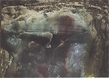

Nezval se zajímal o astrologii, sestavil si vlastní horoskop, a dokonce pøedem urèil pøesné datum své smrti.
|
VÍTÌZSLAV NEZVAL
* 26. 5. 1900 (Biskoupky u Moravského Krumlova)
† 6. 4. 1958 (Praha)
Vítìzslav Nezval patøil k nejplodnìjším a nejvšestrannìjším èeskım spisovatelùm. Byl èlenem Devìtsilu a pøedsedou Skupiny surrealistù v ÈSR. Zaloil poetismus a pøenesl do Èech surrealismus. Základem jeho tvorby byla lyrika, ale psal také prózy, dramata nebo manifesty a vìnoval se pøekladatelství.
Nezval navštìvoval jednotøídku, na které vyuèoval jeho otec, pozdìji pøešel na gymnázium v Tøebíèi, ze kterého musel narukovat. Po maturitì studoval práva v Brnì a filozofickou fakultu v Praze, ale studia nedokonèil. Vìtšinu ivota se ivil psaním. V dobì okupace byl krátce vìznìn. Od roku 1924 byl èlenem Komunistické strany Èeskoslovenska, odmítl vzít na vìdomí politické procesy v Sovìtském svazu a po roce 1948 se stal oficiálním autorem budovatelské poezie.
|

Vítìzslav Nezval
|
Nezval poetista
Nezval se stal èlenem Devìtsilu a roku 1922 a záhy v nìm prosadil svùj program poetismu, kterı vytvoøil „pøi procházkách Prahou“ spoleènì s Karlem Teigem. Zárodky poetismu obsahuje u jeho básnická prvotina Most. Zcela v duchu nového smìru vytvoøil sbírky Pantomima, Menší rùová zahrada, Básnì na pohlednice, Nápisy na hroby, Blíenci, Hra v kostky nebo Básnì noci. Napsal také manifesty poetismu Papoušek na motocyklu, Falešnı mariáš a Kapka inkoustu. Roku 1930 vydával èasopis Zvìrokruh.

Nezvalova Abeceda vyšla v originální Teigovì typografické úpravì s fotografiemi Karla Paspy, na kterıch pózuje taneènice Milèa Mayerová.
Zahraj nìjaké písmeno.
|
Vítìzslav Nezval: Pantomima
Do knihy Pantomima zaøadil Nezval cyklus básní Abeceda, kterı obsahuje ètyøverší sloená na jednotlivá písmena.
Vítìzslav Nezval: Básnì noci
Vrcholem Nezvalovy poetistické tvorby je sbírka Básnì noci, do které zaøadil báseò Smuteèní hrana za Otokara Bøezinu nebo pásma Podivuhodnı kouzelník, Akrobat, Edison a Signál èasu.
Vítìzslav Nezval: Papoušek na motocyklu
Papoušek na motocyklu je netradièním vyznáním, ve kterém Nezval shrnul svùj pohled na poezii. Tento text je nejoriginálnìjším ze všech manifestù poetismu.
|

Štyrskı: Pantomima
Zopakuj si hlavní rysy poetismu.
Najdeš je v Nezvalovì díle?
Které Nezvalovy texty byly souèástí knihy Pantomima?
Napiš ètyøverší na vybrané písmeno.
Co víš o Edisonovi?
Srovnej Nezvalova Edisona s Apollinairovım Pásmem.
Nezvalova obrazová báseò Adé
Jak se ti líbí Nezvalùv manifest Papoušek na motocyklu? Rozumíš mu?
|
Nezval surrealista
Pøi svém pobytu v Paøíi se Nezval seznámil s Bretonem a roku 1934 zaloil Skupinu surrealistù v ÈSR. U v roce 1938 se ale neúspìšnì pokusil surrealisty rozpustit, protoe zaèali kritizovat stalinismus. Názvuky surrealismu nacházíme u ve sbírce Sklenìnı havelok. Následují knihy básní Praha s prsty deštì, ena v mnoném èísle a Absolutní hrobaø nebo surrealistické prózy Neviditelná Moskva, Ulice Gît-le coeur, Praskı chodec a Valérie a tıden divù. Nezval také uspoøádal máchovskı sborník Ani labu ani Lùna, knihu Surrealismus a napsal programovı leták Surrealismus v ÈSR. Do èeštiny rovnì pøeloil nìkteré Bretonovy knihy.
Nezval mystifikátor
Sbírka 52 hoøkıch balad vìèného studenta Roberta Davida obsahovala formálnì dokonalé villonské balady. 100 sonetù zachránkyni vìèného studenta Roberta Davida zahrnuje milostné verše. Poslední soubor 70 básní z podsvìtí na rozlouèenou se stínem vìèného studenta Roberta Davida je pøehlídkou nejrùznìjších básnickıch forem. Najdeme zde formy jako rispetti, šansona, triolet, rondó, kancóna, pantoum, madrigal, nona, villanella, rondel, oktáva, ritornel, kancion, tercina, balatta, gazel, stance, decima, óda a píseò.
|
Vítìzslav Nezval: ena v mnoném èísle
Hlavním tématem Nezvalovy básnické sbírky ena v mnoném èísle je ena v nejrùznìjších podobách. Najdeme zde surrealistickou obdobu starozákonní Písnì písní a øadu dalších básní vytvoøenıch technikou automatického psaní.
Vítìzslav Nezval jako Robert David
V dobì, kdy stál Nezval v èele surrealistické skupiny, psal zároveò klasické básnì, které vydával pod pseudonymem Robert David. Tyto verše vzbudily velkı rozruch. Kritikové i spisovatelé usilovnì pátrali, kdo by mohl bıt jejich autorem. Protoe básnì nebyly nikterak zaèáteènické, správnì se domnívali, e pùjde o pseudonym známìjšího spisovatele. Padala jména jako Hoøejší, Èapek nebo Mahen. Autor veršù se stylizoval do villonovské a gellnerovské postavy vìèného studenta ijícího na okraji spoleènosti, z nìho uèinil nedostatek prostøedkù ebráka a zlodìje.
|

Nezvalùv dekalk
Zopakuj si hlavní rysy surrealismu.
Najdeš je v Nezvalovì díle?
Srovnej Nezvalovu Píseò písní s biblickım textem.
Vytvoø dekalk.
Karikatura, na ní zakuklenı autor, chudı student Robert David, diktuje verše své sekretáøce, jasnì ukazuje na Vítìzslava Nezvala.
Které z uvedenıch básnickıch forem znáš? Èím se vyznaèují? Zkus nìkterou z nich vytvoøit.
Kteøí básníci pøed Nezvalem napsali knihy sonetù?
Jak postupoval Karel Èapek, kdy se snail odhalit skuteènou identitu Roberta Davida?
|
Nezval dramatik
Nezval napsal nìkolik divadelních her a adaptací, které mají blízko k poetismu – Depeše na koleèkách, Milenci z kiosku, Loretka, Schovávaná na schodech, Manon Lescaut, Tøi mušketıøi. K nìkterım z nich sloil i scénickou hudbu. Jeho dramatickou tvorbu uzavírá tragédie Dnes ještì zapadá slunce nad Atlantidou. Nezval také skládal písnì. Napsal scénáø k filmu Ze soboty na nedìli a k avantgardnímu filmu reiséra Gustava Machatého Erotikon.
|
Vítìzslav Nezval: Manon Lescaut
Pro Burianovo divadlo D 40 vytvoøil Nezval adaptaci Prévostova románu o nešastné lásce rytíøe des Grieux [degrije] k mladièké dívce Manon Lescaut [lesko], kterou èekala dráha jeptišky. Milenci spolu prchají do Paøíe, ale kvùli nedostatku penìz naváe Manon postupnì známost s lichváøem, bohatım finanèníkem i jeho synem a snaí se je okrást. Des Grieux by pro Manon udìlal cokoliv. Osvobodí ji z polepšovny a následuje ji do vyhnanství v Americe. Pøi posledním pokusu o útìk ale Manon umírá. Nezval tento pøíbìh zdramatizoval a pøebásnil.
|
Sehrajte ukázku z Nezvalovy hry.
Co víš o Prévostovi?
Kdo napsal Schovávanou na schodech a Tøi mušketıry?
Co víš o tìchto autorech?

Zábìr z filmu Erotikon od Gustava Machatého
|
Nezval prozaik
Nezval se jako prozaik zhlédl v Proustovì Hledání ztraceného èasu. Napsal velké mnoství románù jako Karneval, Kronika z konce tisíciletí, Posedlost, Pan Marat, Jak vejce vejci, Monako nebo Øetìz štìstí, které dobová kritika povaovala za prùmìrné, stejnì jako Básnì v próze. Originálním zpracováním i tématem vynikají knihy Chtìla okrást lorda Blamingtona, Dolce far niente nebo Sexuální nokturno. Nezval také vydal surrealistické prózy Neviditelná Moskva, Ulice Gît-le coeur, Praskı chodec a Valérie a tıden divù.
|
Vítìzslav Nezval: Valérie a tıden divù
Èernı román Valérie a tıden divù vyšel a roku 1945, pøestoe vznikl u ve 30. letech. Odehrává se ve snové atmosféøe a jeho fantastickı dìj je plnı pøekvapivıch zvratù a nadpøirozenıch úkazù. Námìtovì èerpá z tajuplnıch a hororovıch èernıch románù, které rozvíjí o motivy incestu a surrealistické tvùrèí postupy. Vystupuje zde upír Richard øeèenı konstábl, kterı se mìní v krvelaèného Tchoøe, nevinná panna Valérie, její bratr a zároveò milenec Orlík, její babièka a øada vedlejších postav.
|
Jak na tebe pùsobí ukázky z Nezvalova románu?
Srovnej románovou pøedlohu s filmovou adaptací.

Štyrskı: Pape èeské literatury
|
Nezval po roce 1945
V letech 1945 a 1951 Nezval øídil filmovı odbor ministerstva informací. Stal se propagátorem nového politického reimu a psal budovatelskou poezii – Stalin, Zpìv míru, Z domoviny, Velikı orloj. Ménì ideologické byly jeho sbírky Køídla, Chrpy a mìsta nebo Nedokonèená. V rámci moností se sice zastal nìkterıch pronásledovanıch spisovatelù, varoval pøed schematismem i mechanickım vnášením socialistického realismu do èeské literatury, ale jinak si uíval vısadního postavení oficiálního autora a do zásadních sporù se nepouštìl.
|
Vítìzslav Nezval: Z mého ivota
Na sklonku ivota zaèal Nezval psát vzpomínkovou knihu Z mého ivota, kterou bohuel nestihl dokonèit. Pøesto podává zajímavé svìdectví o Nezvalovì mládí nebo jeho pøátelích z Devìtsilu.
|
Co nového ses dozvìdìl/a z Nezvalovıch vzpomínek?
Srovnej jeho pamìti se Seifertovımi.
|
Nezvalova tvorba pro dìti
Nezval nezapomnìl ani na dìti. Vìnoval jim fantastickou knihu Anièka skøítek a Slamìnı Hubert, sbírku próz Vìci, kvìtiny, zvíøátka a lidé i øadu básní.
Fotoateliér Langhans: Nezval
|
Vítìzslav Nezval: Anièka skøítek a Slamìnı Hubert
Titulní postavy Nezvalovy knihy Anièka skøítek a Slamìnı Hubert se zázraènì ocitnou ve svìtì fantazie, kde pátrají po Hubertovì slamìném klobouku. Dìj je plnı pøekvapivıch setkání, nesmyslnıch dialogù a podivnıch situací. Z rynku s orlojem se pøenášejí do zoologické zahrady, øíše loutek, cirkusu a zase zpátky.
Další Nezvalova díla
Zpáteèní lístek
Matka Nadìje
Pìt minut za mìstem
|
Kolik je jedna a jedna?
Kolik je pùl a pùl?
Chtìl/a bys navštìvovat školu v zoologické zahradì? Proè?
Nakresli takovou školu. Co by se tam mohlo vyuèovat?
Co znamená vìta „Nerge dorgo tırgy kargat serge“?
Srovnej Nezvalovu knihu s Carrollovou Alenkou v øíši divù.

Josef Èapek: Ráno
|
Internetové stránky
Nezval, informace
Nezval, ukázky
Filmy
Valérie a tıden divù, reie J.Jireš

Štyrského ilustrace k Nezvalovì básni idovskı høbitov
|
Doporuèená èetba
Blahynka, Milan: Vítìzslav Nezval, Praha 1981
Depeše z konce tisíciletí, Korespondence Vítìzslava Nezvala, Èeskoslovenskı spisovatel, Praha 1981
Jelínek, Antonín: Vítìzslav Nezval, Praha 1961
Macháèek, Miroslav: Vítìzslav Nezval, Horizont, Praha 1980
Nezval, Vítìzslav: Abeceda, Torst, Praha 1993
Nezval, V.: Anièka skøítek a Slamìnı Hubert, Èeskoslovenskı spisovatel, Praha 1979
Nezval, V.: A se ti zasteskne, Odeon, Praha 1983
Nezval, V.: Balady a jiné básnì vìèného studenta Roberta Davida, Èeskoslovenskı spisovatel, Praha 1988
Nezval, V.: Básnì noci, Pìt minut za mìstem, Odeon, Praha 1973
Nezval, V.: Dílo (38 svazkù)
Nezval, V.: Manifesty, eseje a kritické projevy
Nezval, V.: Matka Nadìje, Básnì o enì, o Praze a o matce, Èeskoslovenskı spisovatel, Praha 1953 (ena v mnoném èísle, Praha s prsty deštì, Matka Nadìje)
Nezval, V.: Moderní básnické smìry, Èeskoslovenskı spisovatel, Praha 1989
Nezval, V.: Signály èasu, Èeskoslovenskı spisovatel, Praha 1974
Nezval, V.: Valérie a tıden divù, Kentaur, Praha 1994
Nezval, V.: Vyzvání na cestu, Práce, Praha 1976
Nezval, V.: Z mého ivota, Èeskoslovenskı spisovatel, Praha 1978
Nezval, V.: Zpívám zpìv míru, Mladá fronta, Praha 1980
Svoboda, Jiøí: Pøítel Vítìzslav Nezval, Èeskoslovenskı spisovatel, Praha 1966
Taufer, Jiøí: Vítìzslav Nezval, Práce, Praha 1976
|
Vypracuj písemnı referát o nìkteré z uvedenıch knih.
Které umìlecké smìry a autory zmiòuje Nezval v antologii Moderní básnické smìry?
Josef Šíma: Vítìzslav Nezval
|
|